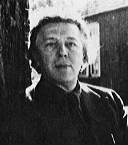

André Breton nasce a Tinchebray-sur-Orne nel 1896; fin dal 1900 si stabilisce con i suoi genitori nella regione parigina. Studia a Paridi, interessandosi ai poeti simbolisti. La guerra del 1914 scoppia quando egli s'iscrive al primo anno di medicina (la psichiatria lo interessa). Chiamato sotto le armi, si ritrova a Nantes, dove ha la funzione di interno all'ospedale militare. Li incontra Jacques Vaché, di cui la strana personalità lo affascina. Durante il suo servizio, impara a conoscere nuovi metodi di trattamento delle nevrosi ispirati dalla psicoanalisi freudiana.
La morte di Jacques Vaché, poi quella di Apollinaire lo feriscono profondamente. Nel 1919 fonda, con Philippe Soupault e Louis Aragon, la rivista "Littérature". Un primo testo, redatto in collaborazione con Soupault secondo il principio della "scrittura automatica", appare nel 1920: "Le champs magnétiques".
Nel 1920, incontra Simone Kahn, che sposa l'anno seguente. Pubblica alcuni poemi, come ad esempio "Claire de terre" nel 1923. Abbandonando i suoi studi di medicina lavora per il sarto - mecenate Jacques Doucet.
La pubblicazione nel 1924 del "Manifesto surrealista" lega definitivamente il suo nome a quello del movimento che comincia, sulle ceneri del movimento dadaista, a divenire celebre per la sua novità ed intransigenza.
Sensibile sia alle ingiustizie sociali che alla liberazione delle forze vive dell'imaginario, Breton s'impegna, a partire dal 1925, nella politica ed aderisce al partito comunista francese nel 1927.
Nel 1926, fa la conoscenza della misteriosa Nadja che diventerà l'eroina dell'omonimo libro pubblicato nel 1928.
Altri incontri, altri misteri, nel 1934, con "La nuite du Tournesol". Egli sposa Jacqueline Lamba nello stesso anno. La figlia Aube nasce da questo secondo matrimonio. I momenti felici di questo periodo sono descritti in "L'amour fou" che esce nel 1937.
Alla dichiarazione di guerra del 1939, Breton è di nuovo chiamato nei reparti sanitari. Preoccupato, dopo la sconfitta del 1940, dal regime di Vichy, sceglie di lasciare la Francia per andare in America.
L'esilio newyorkese di Breton è offuscato dalla separazione con Jacqueline. Nel 1944 incontra Elisa, la sua terza sposa, che gli ridona il gusto per la vita e la scrittura. Egli pubblica "Arcane 17" nel 1945 e l'"Ode à Charles Fourier" nel 1947.
Tornato in Francia nel 1946, Breton si batte con successi alterni, per donare nuovamente al movimento surrealista il lustro che aveva prima della guerra.
Continuamente all'erta quando si tratta di difendere gli oppressi, egli persegue una viva critica allo stalinismo e s'impegna contro la guerra d'Algeria. Occupato dalla riedizione delle sue opere, s'interessa all'occultismo e ai giovani pittori e poeti che vanno a trovarlo.
Muore il 28 settembre 1966. La partecipazione del decesso porta queste semplici parole:
ANDRE' BRETON 1896 - 1966 "Je cherche l'or du temps"